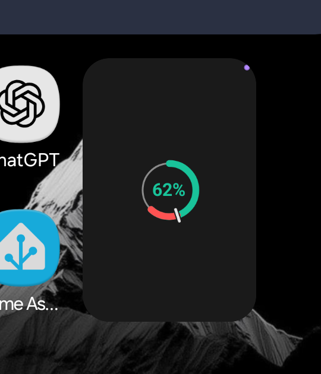

CCBG-38 (Cover Buckets) · CCRM-78 (Widgets Reborn) · 2026-09-26 · rev F
Rev D fitted every face to a cover cell of 90.75×84 dp. The Step 7 device pass measured One UI's real frames, and they are narrower and much taller: a 2×2 on Robin's cover is 156×237 dp, not 181×168. Every 2- and 4-column frame came in under its size-map key, so Android fell back to each face's smallest layout — CCBG-38 (Cover Buckets). Rev F keeps every rev D face exactly as approved and changes only how a face meets its frame: the bucket picks the layout, the reported frame sets the geometry.
Rev F.1 — approved by Fable on Robin's delegation, 2026-09-26, after two rounds: its seven required changes and four of its suggestions are folded in and marked "F.1".
OPTION_APPWIDGET_SIZES and hands the launcher one layout per reported frame,
drawn at that frame and keyed 2 dp under it (F.1: the host matches against its own
laid-out size with only +1 dp of slack, so a half-dp rounding on One UI's scaled host must
not drop the widget to the smallest entry again). A Fold that reports a cover and an inner
frame gets both.The Ring, added at its default 2×2 on the cover with Synthetic "Above pace" on:
the 1×1 face (a Ø64 ring with no label) sits in a tall empty frame, and the synthetic dot is
clipped by the corner. One UI logged findBestFitLayout, widgetSize=155.80952x236.95238,
bestFitSize=79.0x72.0 — the smallest key, because the 2×2 key is 169 dp wide.

| Frame (dp, as reported) | Cover · One UI | Inner · One UI | Rev D assumed |
|---|---|---|---|
| 1 column × 1 row | 84.2 × 107.8 | ~68 × ~114 derived | 91 × 84 |
| 2 × 1 | 155.8 × 107.8 | 202.3 × ~114 derived | 181 × 84 |
| 2 × 2 | 155.8 × 237.0 | 202.3 × 264.4 | 181 × 168 |
| 3 × 3 | 244.2 × 365.7 | — | — |
| 4 × 1 | 333.0 × 107.8 | 470.5 × ~114 derived | 363 × 84 |
| 4 × 2 | 333.0 × 237.0 | 470.5 × ~264 derived | 363 × 168 |
| 6 × 1 | 509.7 × 107.8 | — | — |
Measured with dumpsys appwidget from every placed widget on Robin's
home screens. The cover is a six-column grid; One UI then scales the whole widget by
hsResizeRatio (0.714 on the cover, 0.625 inner) when it draws it, as it does every
other app's widget, so a face looks about 70% of the size drawn here. Another grid setting
gives other frames — which is why rev F keys on the reported frame, not on these numbers.
S1 (normal), Solid, dark and light. Each tile is drawn at the reported frame, 1 px = 1 dp; the caption names the grid cells, the frame and the layout the class rule picks. The first tile of each face is its default placement.
Ring 2×1 (156×108) is shorter than 140 dp, so it takes the 1×1 layout, centred — a ring with no label, the same as rev D's 1×1. Number at 2×2 is under 300 dp wide, so it keeps the 2×1 layout, centred in the taller frame; rev D has no Number layout for a square frame and rev F does not invent one.
The states most likely to overflow — long labels, the widest figures, the markers — at the narrowest frame each face can have on the cover. A run that overflows its box draws a red outline with the overflow in px (none should). Dark Solid; S4 uses ChatGPT.
The stamp where rev D draws it, at the narrow cover frames: it stays when the line has room and is left off when it does not — the account name is never the one to go. The Strip with five accounts shows four rings and a "+1" cell. A five-column launcher's 2×1 (~140×84 dp) drops the window suffix, rev D's compact rule.
The inner frames already fit rev D's keys; rev F draws them at their own size too. 2×2 and 4×3 are measured; the one-row height is derived from the row pitch (confirm at the re-run).
The same rule at the frames rev D was fitted to (the Pixel launcher's 84 dp rows): nothing moves. This is the check that rev F is a refit, not a redesign.
The tall frames on a wallpaper, both themes, including the mismatched case — the centred content must still read with rev D's soft shadow.
A preview is one static layout (Solid, dark, S1), so it cannot pick a layout by size. It is drawn here in the boxes One UI's picker gave it: the Ring's ring takes the height its box leaves above the label, centred, so a narrow box never clips it, and its figure auto-sizes inside the bore (26 sp at most); each Strip ring takes the height its label leaves, so a short box shrinks the rings rather than cutting the names.
Fable approved these with the F.1 changes above. Two are visible departures from rev D and are named for Robin: the stacked Number 2×1 (label above the figure, figure left) and the larger Ring 2×2 (Ø131 / 30 sp on the cover, against rev D's Ø110 / 26 sp).
OPTION_APPWIDGET_SIZES, drawn at
that size), rather than retuning the fixed keys to the Fold's numbers. Why: One UI's frames
change with the grid setting and differ from the Pixel's; any fixed table breaks on the next grid.For Robin (Fable): One UI draws every widget at hsResizeRatio — 0.714 on
the cover — so every type size lands at about 71%: the Strip 4×1's 9.5 / 8 sp reads as ~6.8 / 5.7 sp,
under rev C's 8 sp floor. The app cannot read that ratio. Whether the Strip's type moves up on frames 108 dp
or taller is Robin's call; rev F leaves rev D's sizes.